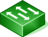
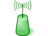
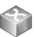

🗺️ Network Topology
Sito:
Tutti i siti
Cerca:
L3
L2
Router
Neighbor
AP
Unknown
Etichette:
Nome
IP
Nome + IP
Nessuna
Mostra Interfacce
Nodi: 0
Link: 0
📥 Export Mappa
SVG
PNG
Viewport
Full
Legenda
Switch L3

Switch L2
Router

Access Point

Unknown
+
−
⟲
Device Details
×
Overview
Ports
Neighbors